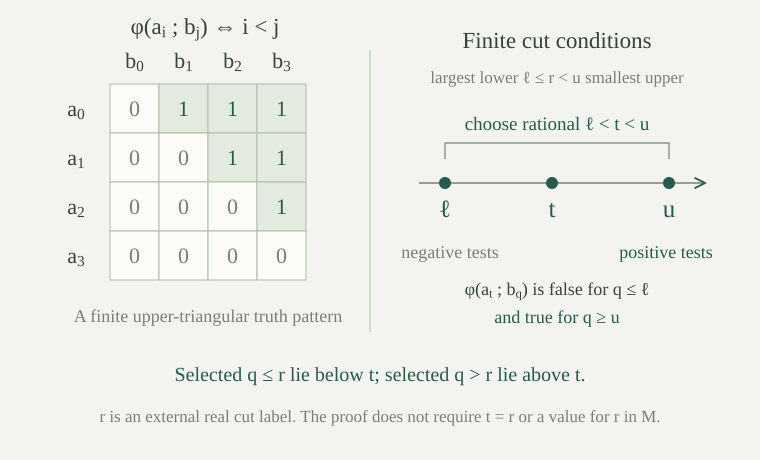

Fix a complete first-order theory \(T\) with an infinite model, in a set-sized language \(L\). We work classically with choice. A partitioned formula \(\varphi(\bar x;\bar y)\) has its finite free-variable list separated into an object tuple \(\bar x\) and a parameter tuple \(\bar y\), both of positive length. This separation records which entries are being varied as objects and which will name conditions.
A \(k\)-order pattern for \(\varphi\), for a positive integer \(k\), consists of a model \(M\models T\) and tuples \(\bar a_i,\bar b_j\) for \(i,j<k\), of the indicated lengths, such that
The formula has the order property in \(T\) if such patterns exist for every positive \(k\). The witnessing model and tuples may depend on \(k\). The formula is stable in \(T\) if it has no order property, equivalently if some finite \(k\) has no such pattern. The theory is stable if every partitioned formula is stable. Empty variable groups cannot give a two-order pattern: equal rows or equal columns would have to have different truth values, so they require no separate test.
These definitions concern formula truth, not the presence of an order symbol. For dense linear orders, the formula \(x<y\) is an immediate example: taking \(a_i=b_i=i\) in \(\mathbb Q\) gives every finite pattern.
If \(\varphi(\bar x;\bar y)\) has the order property in \(T\), then for any infinite linear order \(I\) there are one model \(M\models T\) and tuples \((\bar a_i,\bar b_i)_{i\in I}\) satisfying
Add disjoint families of fresh constants for each coordinate of \(\bar a_i\) and \(\bar b_i\). Together with \(T\), require \(\varphi(\bar a_i;\bar b_j)\) for \(i<j\) and its negation for \(i\ge j\), now written using those constants.
For a finite fragment, choose the displayed origin of each pattern sentence, including its two index labels even if some variables are unused. The finitely many labels have one increasing ordering, say of length \(k\). A \(k\)-order pattern in a model of \(T\) interprets these labels in their increasing order and satisfies every selected demand. All selected \(T\)-sentences hold as well. If there are no labels, use any model of \(T\); assign unused constants arbitrary values.
Compactness supplies a model of the whole expanded theory. Its reduct and the actual values of the new constants have the required pattern at every pair of indices. This gives one model for the entire order, rather than separate models for its finite parts.
For \(M\models T\) and \(A\subseteq M\), write \(S_n^M(A)\) for the complete types over the named structure \(M_A\) in \(n\) object variables. These are consistent complete descriptions of an \(n\)-tuple using parameters from \(A\); they need not already have realizations in \(M\).
For an infinite cardinal \(\kappa\), the theory is \(\kappa\)-stable if
Write \(\lambda=\max(|L|,\aleph_0)\). There are at most \(\max(\lambda,|A|)\) formulas with parameters in \(A\), by the finite-string count. Every complete type is a set of those formulas, so their number is at most \(2^{\max(\lambda,|A|)}\). The \(\kappa\)-stability bound is a stronger restriction when \(\kappa\ge\lambda\).
Stability of a formula rules out arbitrarily long finite order patterns. The cardinal definition counts one-variable types over parameter sets. We will prove a direct link for order patterns with one object variable, and use finite-tuple counts separately when the object group is longer.
Suppose a model \(M\models T\) contains an order pattern indexed by \((\mathbb Q,<)\), supplied by . Let \(A\) be the set of all coordinates of the tuples \(\bar b_q\), for \(q\in\mathbb Q\). This set is at most countable. For each real number \(r\), define the cut conditions in the object tuple \(\bar x\) by
The inequalities here compare the external rational index \(q\) with \(r\). They are used to select formulas; they do not add a real-number parameter to \(A\), or assume that the model itself contains the real number \(r\).
For every \(r\in\mathbb R\), the conditions \(p_r\) are finitely realized in the specified order-pattern model \(M\).
A finite selection uses finitely many lower indices \(q\le r\), where the negated formula is demanded, and finitely many upper indices \(q>r\), where the positive formula is demanded. If both lists are nonempty, let \(\ell\) be the largest lower index and \(u\) the smallest upper index. Then \(\ell<u\). Choose a rational \(t\) with \(\ell<t<u\).
The tuple \(\bar a_t\) satisfies each selected negative condition: for its index \(q\), one has \(q<t\), so \(t<q\) is false. It satisfies each positive condition because \(t<q\). These are exactly the defining truth values of the order pattern.
If only lower indices occur, choose \(t\) above all of them; if only upper indices occur, choose \(t\) below all of them. Rational unboundedness supplies both choices. If the fragment is empty, use any indexed tuple. Thus every finite selection has a common witness in \(M\).

If \(\varphi(\bar x;\bar y)\) has the order property and \(\bar x\) has length \(n\), then some model \(M\models T\) has an at most countable parameter set \(A\) with
For one object variable these are one-types, so the theory fails \(\aleph_0\)-stability.
Use the rational-indexed model and \(A\) above. The finite parameter-type test makes each \(p_r\) a consistent partial type over \(A\), and completion of a partial type extends it to a complete type \(q_r\in S_n^M(A)\). Make these choices for all real \(r\).
If \(r<s\), choose \(q\in\mathbb Q\) with \(r<q<s\). The positive formula \(\varphi(\bar x;\bar b_q)\) belongs to \(p_r\), while its negation belongs to \(p_s\). No consistent complete type can contain both. Hence \(q_r\ne q_s\).
The map \(r\mapsto q_r\) is therefore injective. The cardinality of the reals is \(2^{\aleph_0}\), proving the bound. When \(n=1\), this contradicts the countable type bound required by \(\aleph_0\)-stability. For longer object tuples, the conclusion stated here counts types in that same finite tuple context.
Assume \(L\) is countable and the order pattern has one object variable. There is a countable elementary submodel \(M_0\preccurlyeq M\) containing the parameter set \(A\), and both \(S_1^{M_0}(A)\) and \(S_1^{M_0}(M_0)\) have cardinality exactly \(2^{\aleph_0}\).
Apply the downward Löwenheim–Skolem bound to the at most countable set \(A\). It gives an at most countable elementary submodel \(M_0\) containing it. Since \(T\) has an infinite model and is complete, its models are infinite: for each positive integer \(k\), the sentence requiring at least \(k\) elements is a consequence of \(T\). Thus \(M_0\) is countably infinite.
Elementarity with those named parameters gives \(\operatorname{Th}((M_0)_A)=\operatorname{Th}(M_A)\), so their complete types over \(A\) are the same. The preceding theorem supplies the lower continuum bound. There are only countably many formulas over \(A\), giving the matching upper bound.
Every type over \(A\) extends to a type over the larger parameter set \(M_0\), by surjectivity of parameter restriction. Hence restriction maps \(S_1^{M_0}(M_0)\) onto \(S_1^{M_0}(A)\). Choice gives the same lower cardinal bound for its source. Its formulas are again countable, so its size is at most the continuum. Both equalities follow.
For dense linear orders without endpoints, \(x<y\) has the order property, and the countable parameter structure \((\mathbb Q,<)\) has continuum many complete one-types over its whole domain.
The tuples \(a_q=b_q=q\) in \(\mathbb Q\) give the rational-indexed pattern directly. Its cut conditions say \(x\ge q\) when \(q\le r\), and \(x<q\) when \(r<q\). In the real order, the actual point \(r\) satisfies precisely these conditions.
The inclusion \((\mathbb Q,<)\to(\mathbb R,<)\) is elementary by dense-order quantifier elimination. It therefore supplies genuine elementary-extension realizations of these conditions with every rational parameter fixed. Distinct reals give distinct types as above. The language with rational names has countably many formulas, giving the upper continuum bound as well.
For rational \(r\), the chosen point already belongs to the source. For irrational \(r\), its type cannot be realized by a rational: a rational separating any proposed source point from \(r\) gives a different order comparison. Thus complete descriptions over a countable model can require new points even when that model is uniquely determined among countable models of its theory.
Let \(T_\infty\) be the complete theory of infinite sets in the equality-only language. For every \(M\models T_\infty\) and \(A\subseteq M\), its complete one-types over \(A\) are exactly one type \(x=a\) for each \(a\in A\), and one additional type requiring \(x\ne a\) for all \(a\in A\). Consequently \(T_\infty\) is \(\kappa\)-stable for every infinite cardinal \(\kappa\).
Equality quantifier elimination reduces every one-variable formula over \(A\) to a Boolean combination of equalities involving that variable and finitely many named parameters. If a complete type contains \(x=a\), substitution determines every such formula exactly as at the point \(a\); different \(a\)'s give different types.
If it contains none of those equalities, completeness forces every \(x\ne a\). Those answers determine all remaining formulas by quantifier elimination, so at most one such type exists. It does exist: each finite selection of exclusions avoids only finitely many points, and \(M\) is infinite. The finite parameter-type test and completion give a complete type containing them.
Thus the type set has cardinality \(|A|+1\). If \(|A|\le\kappa\) and \(\kappa\) is infinite, then \(|A|+1\le\kappa\), proving the stated cardinal stability bound. The extra type may be realized outside \(A\), or only in an elementary extension when \(A=M\).
For every positive integer \(n\) and infinite cardinal \(\kappa\), if \(|A|\le\kappa\), then \(|S_n^M(A)|\le\kappa\) in an infinite equality structure. In particular, every partitioned formula of \(T_\infty\) is stable, so this theory is stable.
A tuple type specifies which of its \(n\) coordinates are equal, giving an equivalence relation on a finite set. For each resulting class, it either specifies equality to one named element of \(A\), or inequality to every member of \(A\). Different unnamed classes must be different from each other. These data determine every equality atom in the tuple variables and parameters, and quantifier elimination then determines every formula.
There are finitely many equivalence relations on \(n\) positions. Each has at most \(n\) classes, with at most \(|A|+1\) choices of a named value or an unnamed designation per class. Allowing inconsistent choices only enlarges this upper count. It is at most a finite multiple of \((|A|+1)^n\), hence at most \(\kappa\) by infinite finite-power bounds.
If some formula with \(n\) object variables had the order property, would give continuum many \(n\)-types over an at most countable \(A\). The proved bound with \(\kappa=\aleph_0\) makes that set at most countable, contradicting Cantor's theorem. Thus no such partitioned formula has the order property.
Infinite equality theory also has the stronger unary finite-or-cofinite property of strong minimality. Its algebraic closure illustrates the resulting independence and finite dimension.
What do these examples say about confusing stability with decidability, countable categoricity, or having only finitely many types?
Dense linear orders have the order property and fail \(\aleph_0\)-stability. Their sentences nevertheless have a decision procedure. Thus an algorithm deciding parameter-free sentences does not exclude the order pattern or the many types constructed over a countable parameter set.
All countable dense linear orders without endpoints are isomorphic, so uniqueness of the countable model also does not exclude those patterns. Types over a whole countable parameter domain retain all of its names, which is different from comparing models with no designated points.
In contrast, infinite equality theory is stable and \(\kappa\)-stable for every infinite \(\kappa\), but over an infinite \(A\) it has infinitely many one-types, one for each named point as well as the fresh-point type. Its bound controls the number of types relative to the size of the parameter set; it does not require that number to be finite.